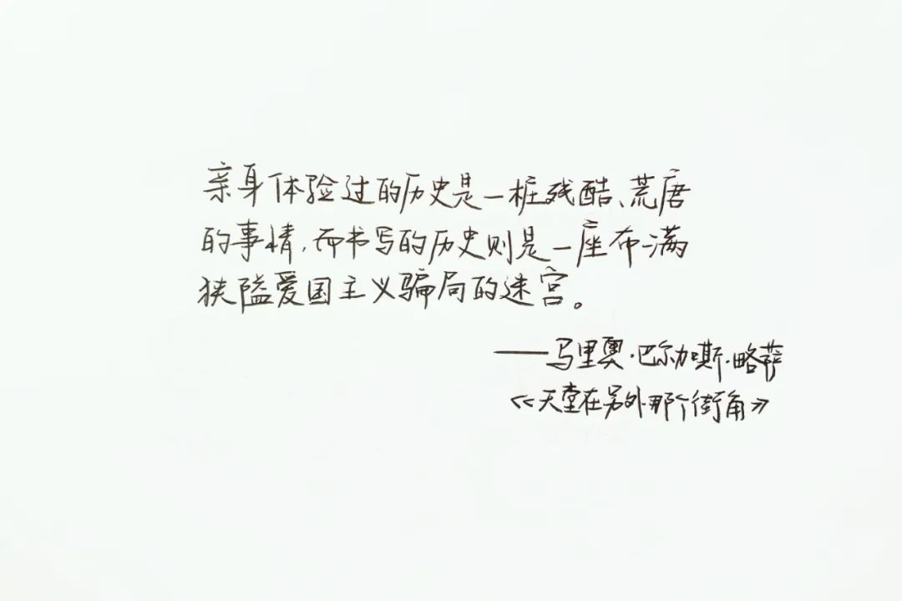
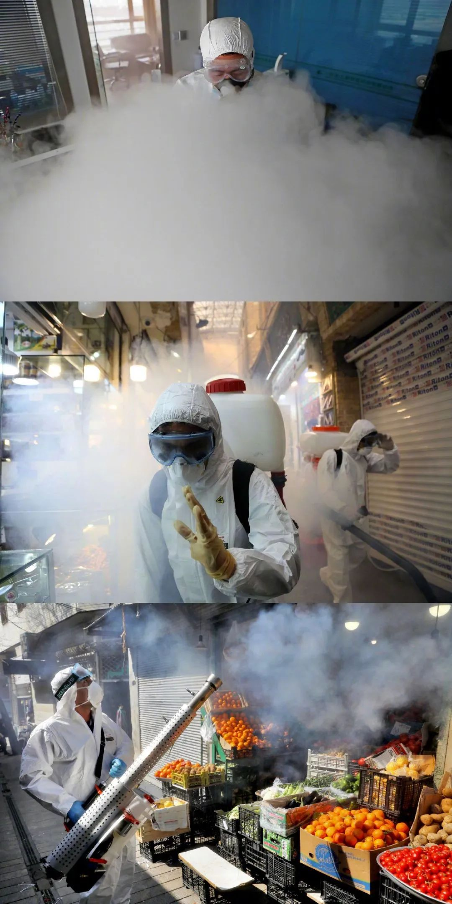
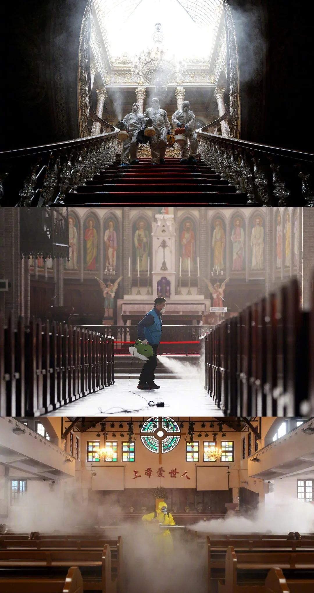
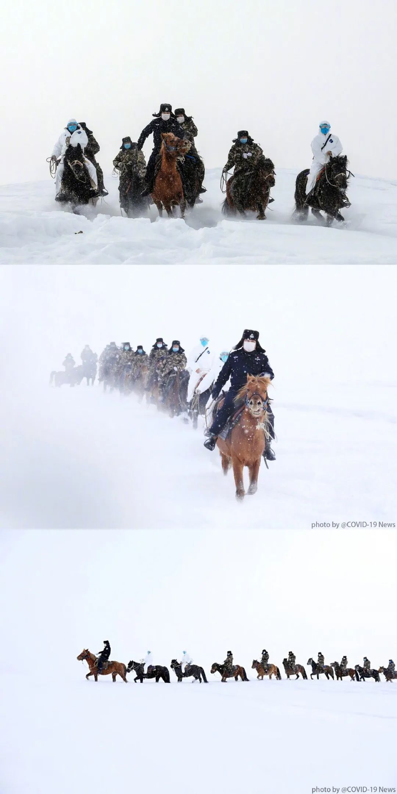
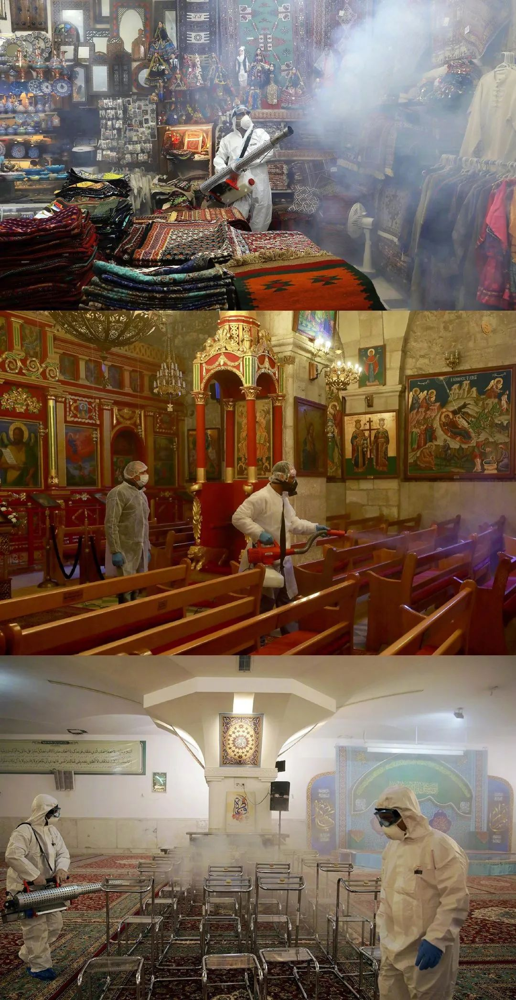
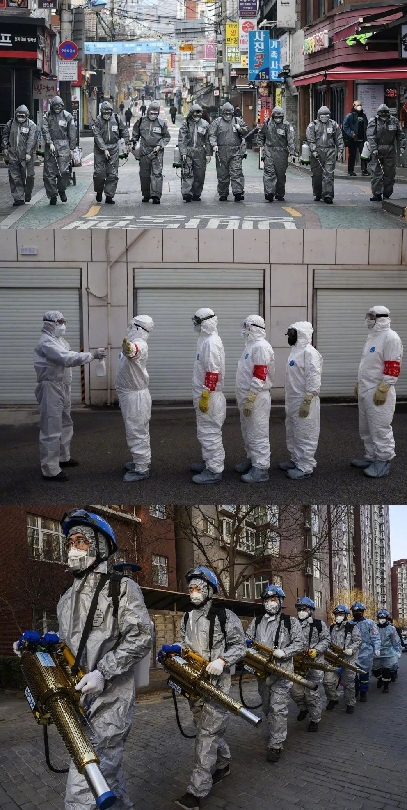

口述实录：一个急转弯般的加速，他们就离去了 | 武汉武汉
原文链接 备份链接 “我们经历着生活中突然降临的一切，毫无防备。”生命中不能承受之轻，用来形容这些天，是那样的贴切。 “时代的一粒灰，落到个人头上，就是一座山。”在突然被按下暂停键的危城武汉，既有个人的茫然无助，也有凡人的挺身而出。恐慌， …

**2020年3月17日。
**
农历二月廿四。
武汉封城第五十五天。
天门解封第四天。
“在人类的历史上，灾难、恐惧、战争才是常态。全球维持长达四十年的和平与繁荣，是非常罕见的。一个人一生中，没有经历战争，没有经历经济崩溃，没有经历社会动荡，这是也非常罕见的。我们生活在一个非常幸运的时代。而我们自己甚至都没意识到这种幸运。我们也没意识到这种幸运是何等地不寻常。又是何等的脆弱。
有的时候，我们一天又一天的过日子，就会产生幻觉，以为明天会跟今天一样，后天会跟明天一样。历史巨变只是写在历史书上，跟我们没有多大关系。直到历史的冰面就在我们眼前炸开巨大的裂痕。”
——押沙龙yashl：当历史的冰面在我们眼前炸开裂痕















Via: @亭林镇无业青年


原文链接 备份链接 “我们经历着生活中突然降临的一切，毫无防备。”生命中不能承受之轻，用来形容这些天，是那样的贴切。 “时代的一粒灰，落到个人头上，就是一座山。”在突然被按下暂停键的危城武汉，既有个人的茫然无助，也有凡人的挺身而出。恐慌， …
原文链接 备份链接 科普有两种，一种是把真的事情告诉你 另外一种故弄虚玄把你带到沟里面去 2月28日，上海市新冠肺炎医疗救治专家组组长、复旦大学附属华山医院感染科主任张文宏接受中新社、《中国新闻周刊》记者专访。中新社记者 汤彦俊 摄 * …
原文链接 备份链接 ****** 当许知远在 2020 年 1 月前往吉隆坡旅行时，原本是想跟随孙中山与康有为的足迹，继续他对中国近代变革的探寻，但国内的疫情随即占据了他的注意力，也影响了这次旅程。与今天摆在我们面前的现实困境相似，一百 …
原文链接 备份链接 武汉的小区陆续封闭了，我住的也不例外， 本来外地住户就多——大多都还没有回来——于是更加显得荒芜起来，待到夜晚零星的灯火挂上楼宇，如同一盏盏被点燃的烛台，努力证明人烟尚在。 汪曾祺以前写道，生活的乐趣就是「看看生鸡活 …
原文链接 备份链接 在第二天的日记里，我说了对轻症患者在家自行隔离的宣传方向所存在的质疑，尚有不少人在评论里争辩，说在医院挤不下的特殊时期，这是可以理解的、不得已而为之的决策。 直到一个多星期后钟南山放话，说居家隔离是非常危险的做法，因为 …